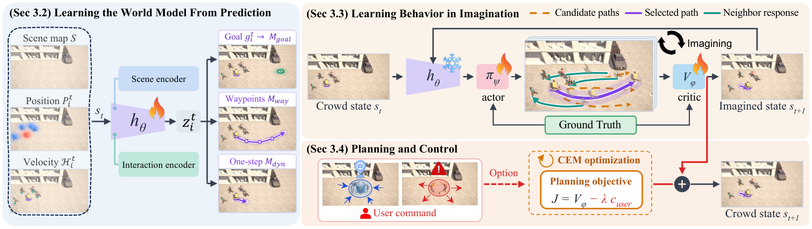

Ctrl-CWM learns how people move from real pedestrian video, then plans every step in imagination, so a new objective can steer a running crowd without retraining.
A collision mid-scene. Both sides are the same Ctrl-CWM rollout. At the moment of impact, only the right side is given an avoidance objective, with no retraining.
Crowd simulation plays a central role in robot navigation, autonomous driving, and urban planning. For these applications, realistic simulation requires crowds to adapt their behavior to environmental changes and user objectives. However, existing methods that rely on predefined control settings have limited flexibility in accommodating new user-specified objectives. To address this limitation, we propose Ctrl-CWM, a multi-agent Controllable Crowd World Model that integrates crowd generation and run-time control. Our key idea is to adapt the world-model principle of planning using imagined futures to crowd simulation. To this end, Ctrl-CWM consists of an encoder that learns a representation of human motion dynamics, an actor that proposes pedestrian displacements, a critic that evaluates imagined crowd trajectories, and a planner that selects actions. We first learn human motion dynamics through trajectory prediction on real-world pedestrian videos and then freeze the encoder to preserve them. Using this representation, the actor generates imagined crowd trajectories through repeated state updates, and the planner combines the critic's scores with user costs to select actions. Repeated planning advances the simulated crowd, while additional user costs introduce new control objectives without retraining. We extensively evaluate crowd generation under varied agent arrival conditions and run-time control across avoidance and attraction scenarios. Ctrl-CWM outperforms the state-of-the-art method on most crowd realism and collision metrics, and adapts crowd behaviors to user-specified objectives introduced during simulation.
Pedestrian videos record how people moved, but they define no actions and no rewards. Ctrl-CWM builds both from trajectory prediction and then plans over imagined crowd futures.

A scene U-Net and an interaction encoder (attention and a GRU, fused by FiLM) learn an agent-centric state through goal, waypoint, and one-step heatmap prediction on real trajectories. The encoder is then frozen to keep the learned human dynamics.
The actor learns one-step displacements through 12-step imagined rollouts with soft-DTW, kinematic, and adversarial losses. The critic learns to rank imagined futures by realism and collisions with a listwise objective.
At every step, CEM samples displacements around the actor's proposal, rolls each forward in imagination, and scores it. A user cost steers the crowd; with the cost at zero the same planner generates crowds.
| Crowd generation · average | Dens. | Freq. | Cov. | Pop. | Kinem. | DTW | Div. | Col.(%) |
|---|---|---|---|---|---|---|---|---|
| Random-surface arrivals | ||||||||
| ORCA | 1.044 | 0.099 | 0.099 | 2.659 | 1.015 | 2.857 | 0.196 | 0.009 |
| CrowdES | 0.746 | 0.128 | 0.128 | 1.871 | 0.605 | 2.204 | 0.294 | 3.448 |
| Ctrl-CWM (ours) | 0.477 | 0.111 | 0.111 | 1.244 | 0.545 | 1.713 | 0.285 | 1.739 |
| Diffusion arrivals | ||||||||
| ORCA | 1.029 | 0.106 | 0.106 | 2.595 | 1.198 | 3.228 | 0.180 | 0.065 |
| CrowdES | 0.147 | 0.052 | 0.051 | 0.315 | 0.525 | 2.126 | 0.297 | 1.930 |
| Ctrl-CWM (ours) | 0.110 | 0.046 | 0.046 | 0.372 | 0.660 | 1.738 | 0.310 | 1.572 |
Averages over five ETH–UCY folds, SDD, and GCS (Table 1 of the paper). ORCA optimizes collision avoidance directly and has the lowest collision rate, but the highest density error and DTW.
| Avoidance compliance ↑ | ETH | HOTEL | UNIV | ZARA1 | ZARA2 | SDD | GCS | AVG |
|---|---|---|---|---|---|---|---|---|
| Disc zone | ||||||||
| ORCA + obstacle | 1.000 | −1.154 | 0.530 | 0.428 | 1.000 | 0.344 | 0.999 | 0.450 |
| CrowdES + map | 0.599 | 0.546 | 0.727 | 0.469 | 0.598 | 0.317 | 0.436 | 0.527 |
| Ctrl-CWM (ours) | 0.837 | 0.988 | 0.831 | 0.752 | 0.714 | 0.877 | 0.827 | 0.832 |
| Rectangle zone | ||||||||
| ORCA + obstacle | 1.000 | −1.484 | 0.526 | −0.049 | 1.000 | −1.827 | 0.595 | −0.034 |
| CrowdES + map | 0.883 | 0.808 | 0.779 | 0.790 | 0.824 | 0.114 | 0.301 | 0.643 |
| Ctrl-CWM (ours) | 0.896 | 0.881 | 0.683 | 0.988 | 0.912 | 0.934 | 0.932 | 0.889 |
| Multiple zones | ||||||||
| ORCA + obstacle | 0.973 | 0.999 | 0.601 | −1.952 | −0.304 | −0.473 | 0.768 | 0.087 |
| CrowdES + map | 0.479 | 0.542 | 0.549 | 0.781 | 0.751 | 0.525 | 0.424 | 0.579 |
| Ctrl-CWM (ours) | 0.992 | 0.997 | 0.993 | 0.983 | 0.971 | 0.908 | 0.808 | 0.950 |
Compliance Cavoid = 1 − occcmd/occfree: one means the controlled crowd never enters the zone, zero means no reduction. Ctrl-CWM receives the objective online; the baselines get the obstacle from initialization.
@article{lee2026ctrlcwm,
title = {Controllable Crowd Generation through World-Model Planning},
author = {Lee, JunGyu and Shin, Jisu and Shin, Seunghyun and Jeon, Hae-Gon},
journal = {arXiv preprint arXiv:2610.09438},
year = {2026}
}